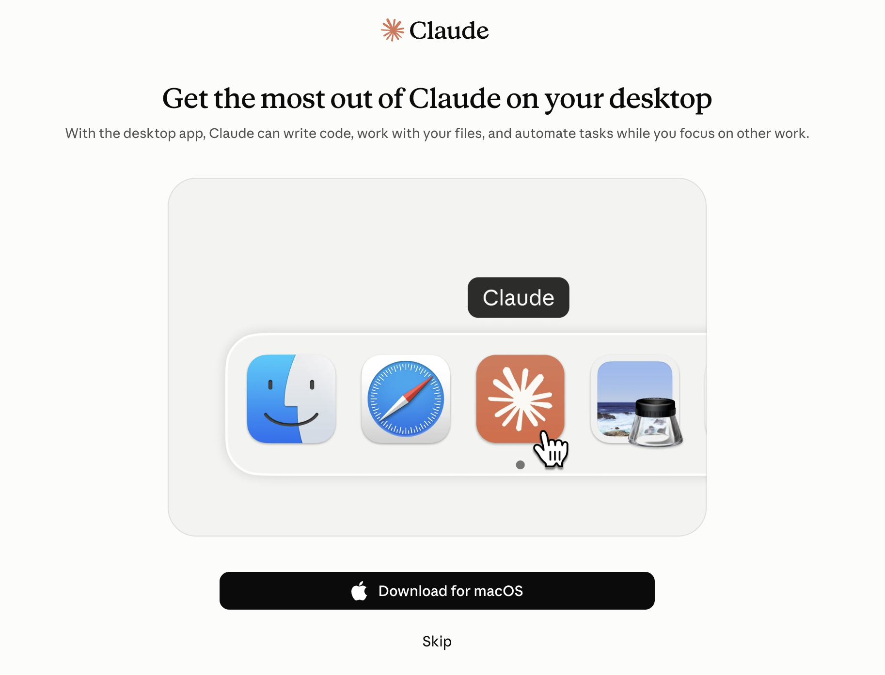
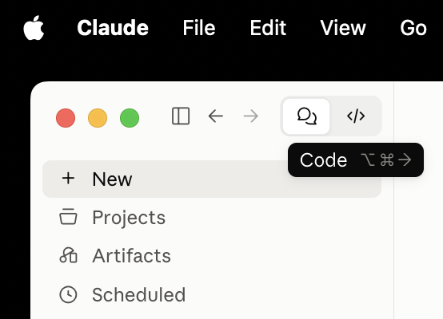
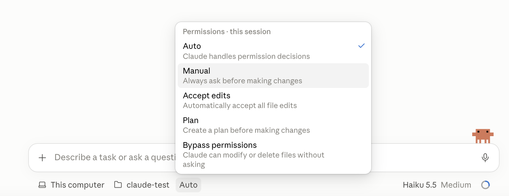

From chat to agent
One day, one skill tree. By the end, everyone has used a skill someone else wrote, and contributed one of their own to the team.
Before the day, collect two things from everyone: the email they sign in to Claude with (invite each to the progress board as Editor from its Share menu, with the public link off; Viewer or Commenter can't save) and their GitHub username (add as a collaborator with Write on this repository). Both invitations must be accepted before the day.
Then start here, on the projector: the next four slides take the room from an installed app to the guide running in the workshop folder. Anyone who hasn't installed Claude Desktop goes to the install table now.
Same model. Different job.
- You paste the text in
- You copy the answer out
- You re-explain the rules every time
- It can't check its own work against anything
- Reads and writes the files in a folder
- Runs commands, and shows you each change
- Follows rules written down once: CLAUDE.md
- Uses shared skills, and connects to data with MCP
Don't sell it. Ask: what was the last thing you pasted into a chat, and what did you do with the answer? Two answers from the room, then point at the right-hand column.
Open the app. Open a folder.


- claude.com/download, install, and sign in with your work account, on a paid plan.
- Click the </> Code button at the top left (⌥⌘→). The speech bubbles next to it are the Chat you already know.
- + New. Under the message box: This computer, then the folder button. Make and pick an empty folder: claude-test in Documents.
The Code tab works inside the folder you choose, and only there unless you let it out. That is the whole difference from Chat.
Do it on the projector, one step at a time, and wait. Anyone whose Code tab asks to upgrade goes to the install table: their plan doesn't include it.
Where things are in the Code tab
Point at each on the projector. The icons along the top right open a terminal, the changes made, a preview and the files; mention them, don't teach them yet. Demo !git --version here: the setup proof, and the room's first command. Desktop moves fast: check these labels against the current version the day before.
Auto is the default. Switch to Manual.

- Manual: asks before every change. Today's start
- Accept edits and Plan: later this morning
- Auto: off until you've earned it
- Bypass permissions: never, today
- Sonnet: the everyday choice. Use it today
- Opus: strongest, slower, uses your plan fastest
- Haiku: quick, for small, clear jobs
- Effort: how long it thinks first
Check every screen says Manual before moving on. The mode is per session: a new session may start in Auto again, until the workshop folder's settings take over (they set Manual). Auto comes back in "trust per action", where they turn it on themselves and count what still asks. Everyone on the same model keeps comparisons fair.
From here, Claude sets itself up
The guide asks to create progress.md, your own record. Allow it. Git not working yet? On the GitHub page: Code → Download ZIP, unzip, open that folder.
Predict first: will it ask before cloning? The clone is the first approval, so read the command aloud together. Anyone stuck on git uses the ZIP and fixes git at the install table during the next block.
Every exercise is the same loop
start the workshop
Your progress board shows the tree: mark a node done with one line on what you noticed, and the next ones unlock. The workshop guide skill in your Code tab sets each task. Stuck? It asks what you tried; ask twice and it explains.
Progress is private and per person. The room view is where people are, never a ranking. Nobody is behind; people are on different nodes.
A skill tree, not a slide sequence
Source: tree/tree.yaml. The I can… sentence on every node was the pre-session self-assessment. Read back the distribution: which tiers the room already has, which nobody has.
Mark it done. Say what surprised you.
Open the progress board · open it from your email invitation, signed in to Claude with that address
Saving needs an Editor invitation to the email they use for Claude, and no public link on the board. Anyone whose board says View only isn't invited yet, or is signed in with another address: invite them now from the Share menu. Put the board's room view on the projector during welcome. The distribution replaces the self-assessment readback: which tiers the room already has, which nobody has. Leave it up during hands-on blocks.
Six hours, five tiers
Sharing skills through the team repository (tier 6) opens the follow-up session, after you've written one.
The folder is the context
Why did sign-ups drop on 15 September?
- Manual mode: read the diff, reject one change, say why
- Plan mode: agree the approach before anything changes
- Same task, two models: what did you trade?
Proofa file Claude changed that you opened and checked · one change rejected and re-asked
The sample hides an unexplained spike on 19 Sept. Watch for whether Claude admits it can't see the cause or invents one, and ask the room which it did.
Trust is earned per action
Commit: automated. Push: always asks, even in Auto. Changing who can access the cloud project: denied. One session, three rungs.
Same task three times: Manual, Accept edits, Auto. Everyone predicts the number of prompts first. The ladder is the Decision Budget's; promotion is "Yes, and don't ask again" after you've changed nothing several times. Down is a normal move.
Write it down once. Everyone gets it.
- Data first: what may go to a model, and what may not
- Where our files live, and how they're named
- Who checks what before it leaves the team
- Then the settings that enforce it
Start the conventions from the group's data rule in overlay/. Everyone adds one line. This file is the first shared artefact of the day; it gets corrected after a week of real use.
Git is the undo button and the way we share
Show me what changed since the last commit.
Put the file back the way it was.
Now push that commit straight to main.
You ask in words; Claude runs the git commands. Read each one before you approve it. The push to main is refused: main only changes through a pull request. Sign in to GitHub yourself, never in the chat.
Everyone needs Write access to this repository (invites accepted) and GitHub sign-in working. On Macs that means GitHub CLI and gh auth login in the terminal pane. Read GitHub's refusal aloud: that is the ruleset doing its job.
Someone else's know-how, in a folder
presentation-template
This deck is built on the same template and its skill.
Skills in a repo load only when the session is opened on that folder. That limit is why tier 6 exists, and why a plugin is the next step later.
Your skill, in everyone's copy
Predict: after you open your pull request, when does your skill reach your neighbour's laptop?
One folder each means every PR merges cleanly in any order. Merge with the room watching, reading each description aloud. Afterwards, show git log --oneline on the projector: every merge is there with a name on it. The same moves in the follow-up go to the group's own repository, for real.
Connect the source instead of pasting the export
Askevery time: what just left my laptop, and where did it go?
One repository. Everyone gets the same version.
Two groups, two ways of working, one set of skills. A disagreement becomes a review comment instead of a second template.
Why did sign-ups drop to zero?
- Read both files
- Found the change log entry: newsletter_signup renamed to sign_up on 15 Sept
- Pointed at the first zero in the CSV, the same day
- Opened the change log line myself
- Found the first zero in the CSV myself
- Asked about the spike on 19 Sept: it said it couldn't tell, which is the right answer
An illustration using the made-up files in samples/: run it yourself and compare. Your real task follows the same three columns.
One real task, end to end
Two minutes each. The third column is the one that matters: a result you haven't checked is a guess, however well written.
Homework
- Finish your skill
- Connect BigQuery and ask the GA4 sample one real question. Bring the error if it fails.
- Make your own Developer Knowledge key
- One thing our conventions got wrong
- Homework errors, fixed together
- Everyone installs the team skills repo
- Each group merges a skill after review; the other group uses it
- Many skills, one entry point
- After lunch: your own decisions
Same sheet, second time
Answer the I can… sentences again: yes, partly, no. The difference from this morning is the day.
Collect the sheets. Revoke nothing yet: the lent keys stay valid until the follow-up.